DCV-Exotic (Structured Products & Clearing)
What is a Structured Product?
TradFi money legos
In a nutshell, a Structured Product is a hybrid derivative that combines the features of multiple financial products into one. For example, it can combine certain features and protection of a bond, but carries an upside payoff conditional on certain market conditions. A typical TradFi structured note could link its return based on a basket of stock indices, such as the MSCI world equity index. Another structure could see the note pay a return based on the prevailing 5yr US treasury yield, but the note becomes immediately redeemable as soon as the 5yr yield breaches a certain cap.
Main User Benefits of Structured Products
Designing Your Own Payoffs
The main benefit of structured products is the tailored payoff profiles they offer to investors, and often designed with some form of downside protection in mind.
- Bespoke Payoffs: A structured note can be designed to offer investors a conditional payoff structure that they would not have access to otherwise. Said in another way, issuers are combining different instrument classes to create a payroll scenario that is more suitable to the investor's risk preference.
- Simple Operations: Instead of managing a portfolio of option and directional risks to obtain a desired payout, structured products help to wrap this complexity within the confines of a single note, making things much simpler for the investor.
- Design Flexibility: An endless array of customization options are available based on expiration, strike price, underlying asset, and payoff structure, catering specifically to the risk preferences of the investor. For instance, principal-protected structured products are particularly suitable for more conservative investors who are looking for yield enhancement over fixed deposits. In another example, investors with a 'range-bound' view of the markets can enjoy high interest yield from investing in products such as DNT (Double No Touch), which serve the highest payouts when prices stay within well contained 'barriers'.
- Monetizing Crypto Volatility: At its core, structured products are utilizing embedded options to generate extra returns, therefore payouts are directly affected by volatility pricing. With crypto assets typically having higher implied volatilites compared to conventional markets, crypto structured products tend to offer higher yields vs their TradiFi counterparts. With an increasing focus on token staking and yield generation, we expect structured products to play an increasingly significant role across the entire crypto ecosystem.
Example Progression of Structured Product Face Value from Inception to Maturity
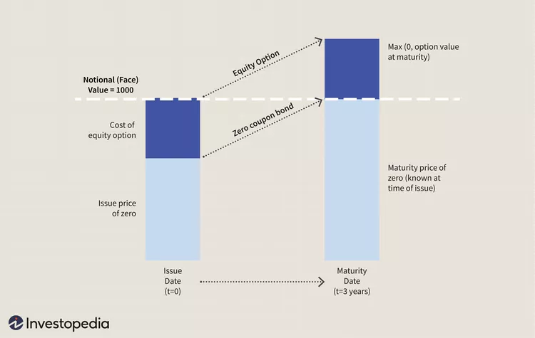
The On-Chain Structured Product Opportunity
Shifting the freedom of choice back to the end-user
Like everything else in TradFi, having access to Structured Products requires going through a whole labyrinth of gated middlemen and service providers who are more interested in monetizing your net-worth than growing your investments. Furthermore, by virtue of being a customized product, executions are conducted in an OTC (over-the-counter) manner, with your preferred Wall Street middleman quoting you a price based on a minimum notional, while ensuring that the embedded product margin is enough to fund their lavish year-end bonuses. Pricing transparency is nil, and price competition is non-existent as well unless you are a Family Office whale with multiple private bank coverage. In short, you are asking for the permission of financial institutions to sell you a note at the price they want. No wonder structured products remain a permanent mainstay of banking profitability.
Inspired by Erik Voorhees, the DCV-Exotic vaults will eliminate all the unnecessary middleman fluff via the creation of a transparent on-chain workflow that presents a fair and utilitarian price discovery process for both users and market makers. We envision this to be the start of a series of protocols that will return product access, pricing transparency, freedom of choice, and competitive fairness from the grip of financial institutions back to the end investor.
TradFi Market Size
US markets have seen an annual issuance of around US$70-90bln of traditional structured products over the past few years. For the most part, they are packaged investment products offered by Wall Street banks, typically structured as downside protection notes with upside yield benefits via the use of embedded options.
Structured Products Issuance in Traditional Financial Markets
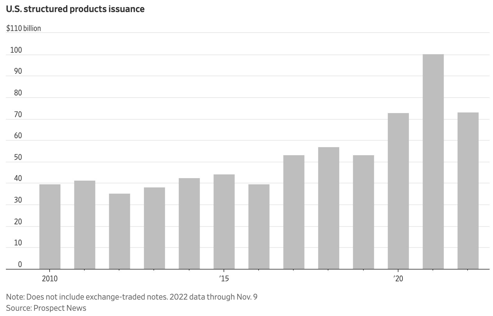
 Source: SRP, WSJ
Source: SRP, WSJ
Interestingly, while the outstanding notionals of structured products are low compared to their vanilla peers, their profitability punch well above their weight, contributing more than half of total revenues toward the top global banks' equity derivatives business, making them a high-focus area for business executives.
The Structured Products Business Offers Some of Most Profitable Revenue Streams for Investment Banks
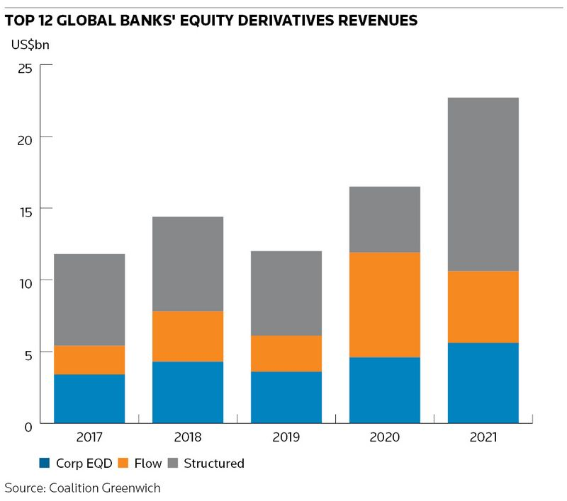
Source: IFR
Crypto Market Size
Over in crypto, industry research suggests that on-chain structured products constitute just US$2.5 bln of TVL, versus a DeFI market cap of US$50 bln (5%), and US$1 trln for the entire crypto marketcap. On the CeFi side, offshore CEX are estimated to control around US$100bln of assets (source: Defillama), so a simple extrapolation would estimate aronund US$7-10bln of outstanding structured products across both on- and off-chain venues.
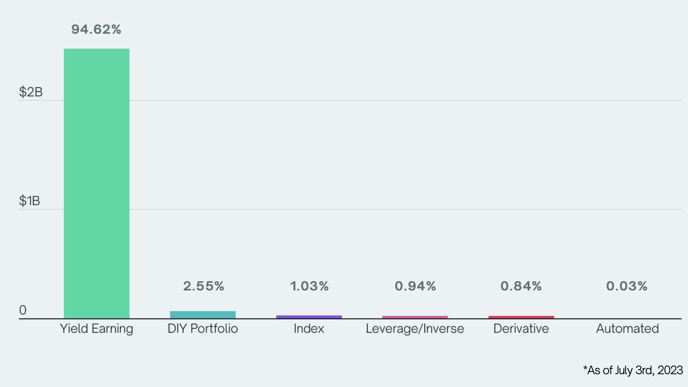
Source: Index Coop
Blockchain Support
The DCV-Exotic protocol will be launched on Ethereum and other L1 EVM blockchains to start.
Protocol Workflow
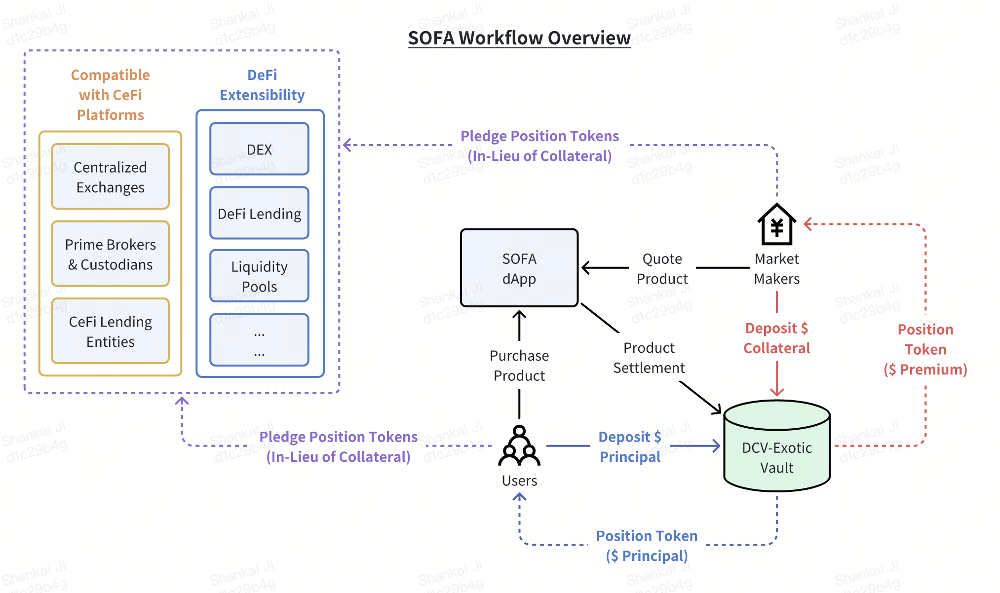
A high-level run-down of a typical trade execution via DCV-Exotic is as follows:
- Participating institutional market makers continuously stream executable prices on structured products to the protocol's dApp
- User selects and executes a particular structured product purchase based on the price shown
- User's committed assets are sent and locked in the product's DCV-Exotic
The market maker's collateral is also sent and locked into DCV-Exotic
- Note: the transaction will not execute if either side fails to post their required assets at this point
- Corresponding Position Tokens claims (referencing asset details) will be minted to both the user and market maker, freely transferrable like any conventional ERC-20 token to any other wallet destination
For Principal-Protected structures only, the collateral in the vault would be staked into mature and safe yield earn protocols like Compound, AAVE and etc. to earn a base level of interest for users
- Extra careful scrutiny will be placed on this step, with eligible destinations voted on by the Governance Token holders
Finally, upon product expiry, the relevant payout will be released and claimable in the vault by both the user and the market maker
- Should the respective Position Tokens be transferred to a new wallet, the owner of the address will instead be able to claim the asset at anytime post-expiry
Token Standards (ERC-1155)
All of SOFA.org's protocols will tokenize chain-locked positions via the ERC-1155 multi-token standard, recording vital position details such as [Expiry], [Anchor Prices], [Maker/Taker Toggle] etc in the case of DCV-Exotic.
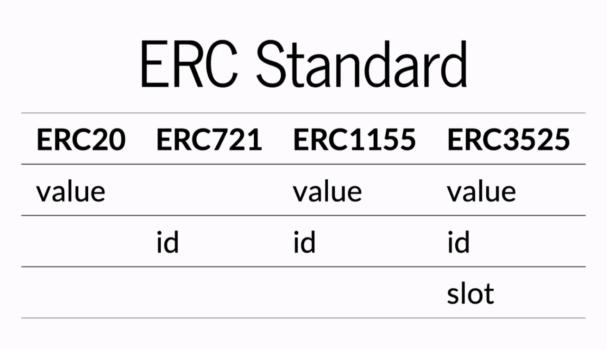
ERC-1155 allows the creation and management of multiple types of tokens within a single contract, with support for each type of token having different properties. Positions with the same parameters can still be merged or split, while enabling transfers as conveniently as standard ERC-20 tokens. This innovation strikes a balance between wide asset compatibility, high flexibility, and gas efficiency.
Vault Classification
The Vault contract uses the ERC-1155 standard to support fungibility of Position Tokens with the same strike price and expiry time. DCV-Exotic is designed with the flexibility to support any structured product type and collateral denomination, though a distinction will be made on whether the underlying product contains a 'principal protection' feature or not.
Additional Technical Details
Immediate Position Token Use-Cases
Unlocking on-chain asset mobility across both DeFi and CeFi
The ability to revive dormant, chain-locked assets into an ownership transfer using Position Tokens (ie. rehypothecation) will unlock significant liquidity flow into the DeFi ecosystem.
Secondary Trading of Position Tokens
Position Tokens can be transferred (like any ERC-20 tokens) by users into supporting DEX / DeFi Protocols to act as recognized trading margin and collateral (with a risk haircut). By pledging the Position Tokens, the protocol is now the rightful owner of the locked assets in the vault, and can retrieve (and liquidate) them at anytime post instrument expiry. In return, the user gains liquidity access to locked funds to deploy in new trading opportunities as desired.
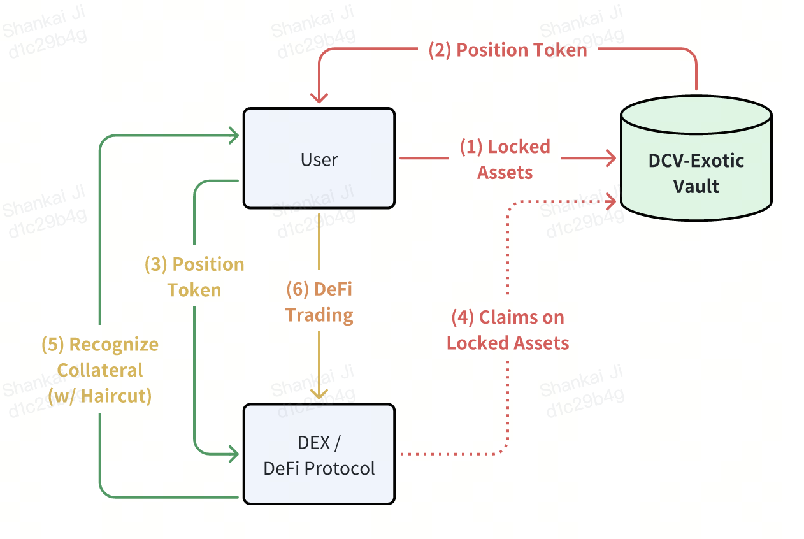
Collateral on Centralized Exchanges
As the bridge between DeFi and CeFi continues to evolve, there are interesting use cases where Position Tokens can be deposited and accepted by supporting centralized exchanges as trading margin collateral. Furthermore, exchanges can also take advantage of using blockchain vaults as a clearing protocol to establish a more robust 'tri-party' settlement framework. Users will ultimately get the best of both worlds with the execution liquidity & fluidity from a CEX, while enjoying the custody safety of a blockchain vault.
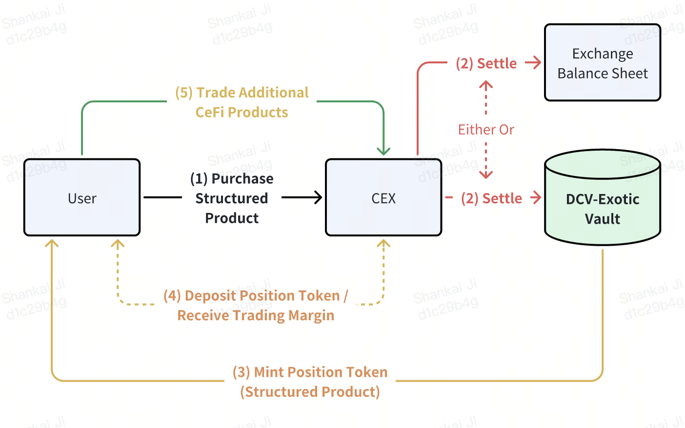
Fully Collateralized DeFi Lending
Besides on-chain trading, tokenized positions can be safely deployed in collateralized lending protocols. Users can pledge their Position Tokens as collateral to swap into lending pools from other cryptocurrencies or stablecoins, thereby greatly enhancing the churn and collateral mobility between various DeFi pools.
Additional Use-Cases
The examples above are just a tiny subset of scenarios that can take advantage of position tokenization. While we are going to confirm our proof-of-concept initially via structured products, the underlying concepts extend to the entire gamut of investment products, each with their own respective parameters that can co-exist at the same time. In fact, position tokens of matching parameters can be aggregated together as a 'product type', offering the same flexibility in frictionless transfer and asset management as a conventional ERC-20 token.
By tokenizing positions with the ERC-1155 standard, SOFA.org is looking to create a benchmark standard for risk tokenization that ensures the uniqueness of each investment product while minimizing smart contract complexity. The design vision provides secure, accurate position representation while maximizing use-case extensibility into other DeFi protocols. We see this as the initial key building blocks towards a true decentralized clearing system, and are excited to continuously improve and iterate further improvements towards our ultimate goal.
Summary of DCV-Exotic Benefits
Setting a new paradigm for crypto settlement & blockchain clearing
- SOFA.org is looking to provide an infrastructure blueprint towards decentralized clearing and elimination of crypto counterparty risks
- Allows users to make structured product investments strictly based on payoff and pricing benefits, while off-loading asset custody concerns to onc
- Recording of all vital instrument data on-chain in a fully transparent manner
- Supports a wide gamut of instrument parameters and product structures
- Tokenized positions unlocks capital efficiency as a form of secure collateral rehypothecation
- Fully composable into other DEX, DeFi lending protocols, with additional compatibility with even centralized platforms via tokenized positions
- Innovative use of ERC-1155 and Permit2 smart contract standards to provide product flexibility with reduced gas costs
- Deflationary, user-aligned, and long-term sustainable tokenomics design
Available Structured Products on DCV-Exotic at Launch
As our inaugural proof-of-concept, we will initially focus on three popular product structures called Double No Touch ('DNT'), Smart Trend and Shark Fin. All of these products are available in either 'Principal-Protected' or 'All-or-None' forms. Moreover, additional product types will be continually added based on user demand and ecosystem feedback.
Double No Touch (DNT)
Product Overview
Double No Touch products are a type of structured product based on price boundaries. Investors can profit if the underlying asset does not touch the preset barriers during the investment period. These products are suitable for investors who expect the market to stay in a sideways consolidation phase with subdued volatility.
Referring to the payoff diagram below, an investor believes that BTC will be stuck between a range as defined by the lower and upper barriers, but does not want to incur much downside even if the view proves to be wrong. The DNT product will guarantee the investor a minimum base yield of (A) even if the price of BTC breaks out from either side, but the investor will be entitled to an extra profit return equivalent to (A+B) should prices stay contained within the barriers.
For customization options, the investor is free to adjust the width of the price range, which would incur a different profile of base and upside profits depending on the levels chosen. Naturally, specifying a tighter price range represents a more aggressive bet on low volatility, which would lead to higher upside returns. Conversely, a wider price range would lower excess profits in return a higher probability of winning. Finally, for ease of management, the product can specified to be automatically re-invested upon maturity as a continuation bet.
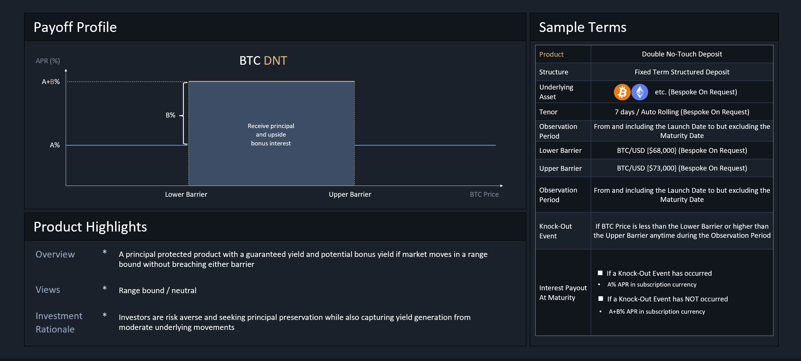
Smart Trend
Product Overview
The Smart Trend product is suitable for investors who expect that the market will soon undergo a smooth and steady trend, but still desires some downside protection. By defining both a lower and upper price barrier, investors will start accruing income gains as soon as the underlying instrument crosses the initial price threshold, with increasing payouts until we hit a maximum at the 2nd boundary.
Moreover, unlike the DNT product, Smart Trend only observes at the time of settlement whether the price of the underlying asset falls within the set range to determine the final profit (ie. European option). This product is available via both Bullish and Bearish expressions.
As an example, if an investor is bullish on BTC and predicts that in the next seven days, the price of BTC will remain above $70,000 but will not exceed $73,000, they can choose to buy a bullish Smart Trend product, setting $70,000 as the lower limit and $73,000 as the upper limit of the profit range. Referring to the diagram below, at the time of settlement, the investor will be eligible for a payout between base profit of (A) to and upper limit of (A+B), depending on what the price of BTC is at the time.
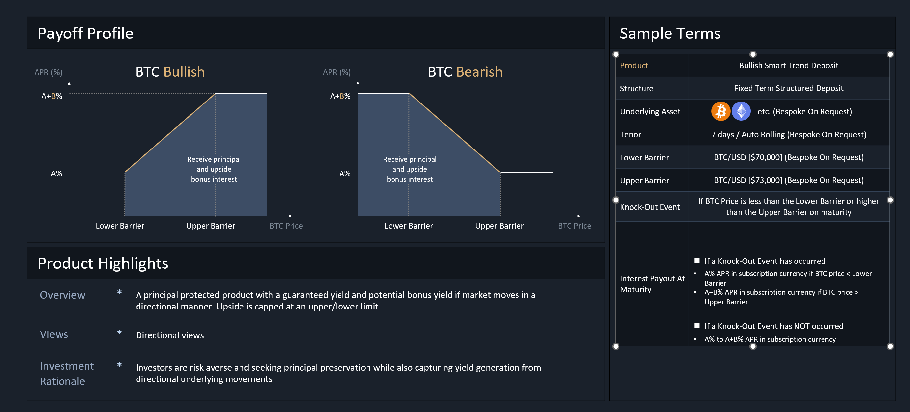
Applicable Scenarios
The product might be suitable for investors who believe that an asset will see a strong reaction to a specific economic event, but is also concerned about the risk of a price decline should they be wrong in their market prognosis.
For example, the investor might desire to speculate on BTC prices on the next FOMC decision, the having event, or the next ETF approval announcement. This strategy is appropriate for investors holding a strong market conviction into these important but risky events, and wants to remain disciplined in managing downside losses should his/her view turn out to be wrong.
Shark Fin
Product Overview
Compared to DNT and Smart Trend, the 'Shark Fin' product is relatively more well-known in TradFi markets thanks to its memorable moniker. Its design and payoff are similar to Smart Trend (ie. European option), with the main exception being that the investor is speculating much more aggressively on prices being within a particular range.
Said in another way, the Shark Fin product adopts a more conservative view on market volatility by sacrificing more upside on a large market move, in return for more aggressive profits within the lower price boundaries.
As example, let's say an investor is bullish on BTC, but holds a high conviction that it will not breach a certain upper bound at some strong technical resistance level. In such a scenario, the investor can choose to buy a Bullish Shark Fin product with a payoff profile as per the diagram below. At product settlement, the investor will receive a return ranging from (A) to (A+B) depending on where spot BTC is; however, unlike in Smart Trend, note that the return drops to (A+C) upon a breach of the upper price barrier, offering a trade-off in exchange for more aggressive profits in the preceding range.
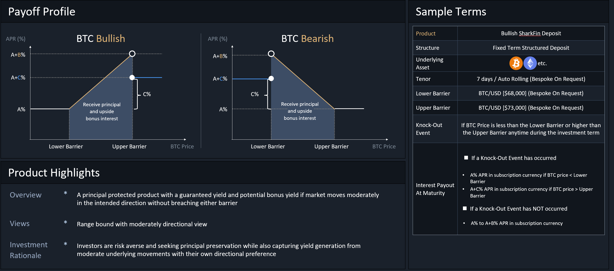
Defining Your Risk Preference
Principal-Protected
Principal protection features are designed for risk-averse investors looking for a guaranteed return of their principal. Principal protected vaults will invest users' deposited principal in safe-yielding protocols (eg. AAVE) to generate a base level of interest, and utilize a portion of that guaranteed income to fund option premium with market makers for upside potential.
The end result will ensure a full principal return at the downside, with some upside potential should the market move favourably in the user's direction.
With that being said, please note that a critical design component requires the passive yields offered by the eligible staking protocols to be meaningfully above the product's worst-case payout, in order to properly fund the option premium to generate the upside return. As such, should the user be holding ETH instead of USDT, he/she will need to convert the ETH into stETH in a liquid staking protocol such as Lido, before locking the stETH into the sofa protocol vaults to benefit from the extra yield accretion.
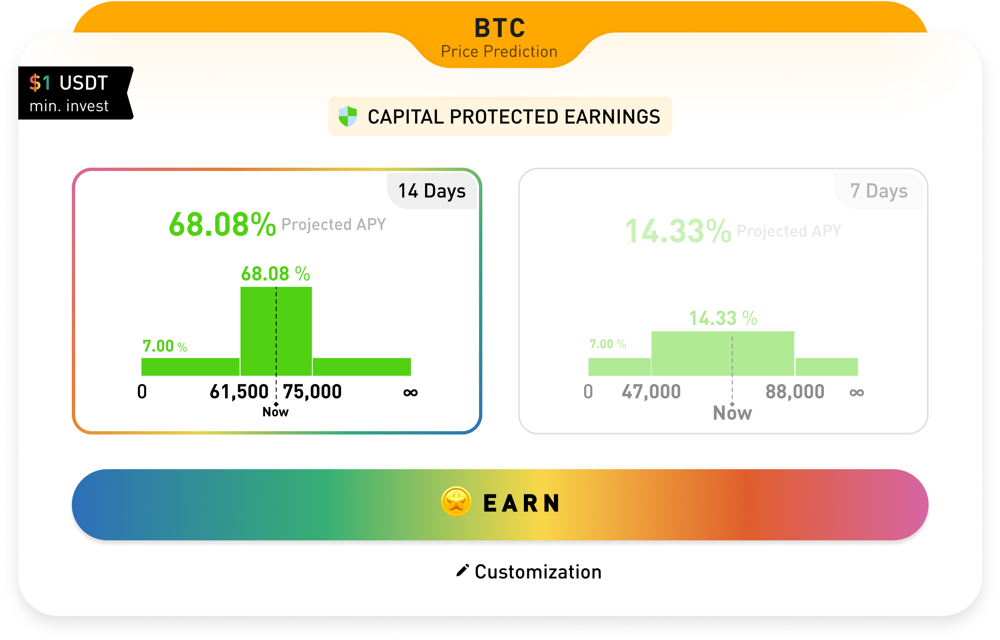
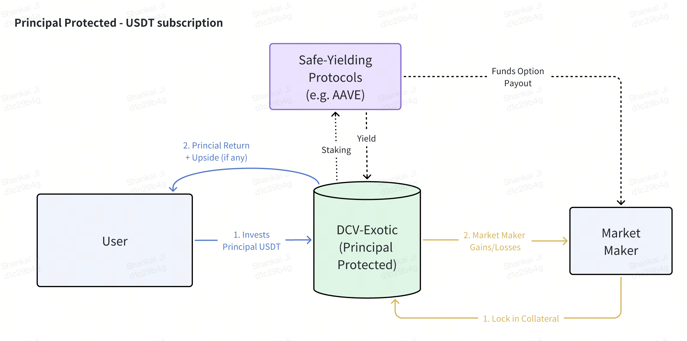
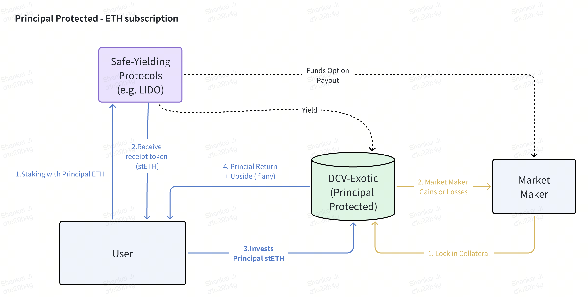
All-or-None
For investors with a greater risk-reward tolerance, the protocol also offers higher-return structures with risks of complete capital losses. These aggressive products are only intended for risk-loving investors (fellow degens) who are desirious of substantially high returns in exchange for capital losses.
With these All-or-None products, the protocol vault will lock in both the investors' principal as well as the market makers' collateral at trade inception, analogous to a 'poker-ante' of sorts. The locked principal positions will not be restaked to any other protocols, and it serves as the capital-at-risk against the product payoff.
Let's use the All-or-None DNT product as an example. Should the price of the underlying asset remain strictly within the barriers by final maturity, the investor will receive multiples of higher return than he would have under the Principal-Protected version. However, should the opposite happen, the investment will be early-terminated, with the entire locked principal being transferred to the market maker as the 'winner' of this strategy.
Once again, these products are intended for investors holding a very strong market conviction, and would like to put that confidence to test in hopes of earning a very high rate of return in exchange for principal losses.
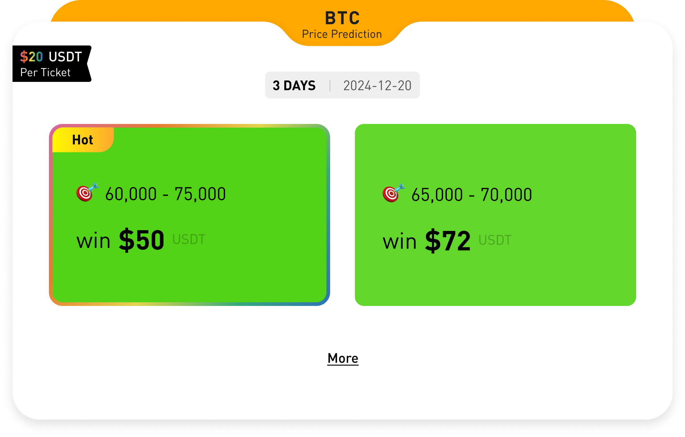
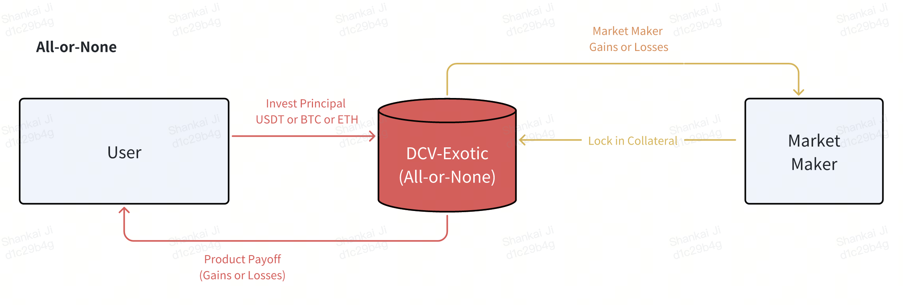